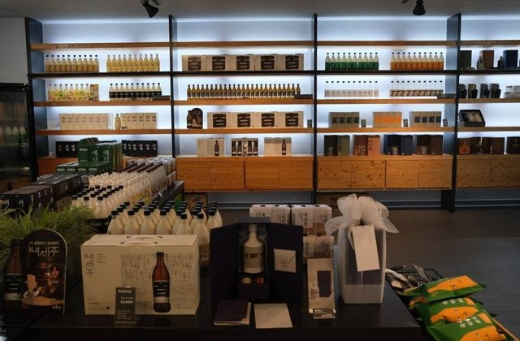

GREETINGS
안녕하십니까!
국순당입니다
국순당은 1952년 창업 이래 우리 전통주의 근본인
누룩의 고유한 제조법을 계승 · 발전시키며,
현대인의 입맛에 맞게 끊임없이 다듬어 왔습니다.
VALUE
국순당이 지켜 가는
세 가지 가치
-
- 01계승
- 누룩 제조법을
오늘의 맛으로
-
- 02연구
- 국내 유일의
누룩 연구소
-
- 03세계화
- 세계가 찾는
우리 명주

GLOBAL
우리술의 세계화,
명품화를 위해
2007 프로드엑스포와 상해SIAL에서
연이어 수상하며, 우리 전통주를
세계에 알리고 있습니다.
반세기 동안 걸어온
전통주의 외길